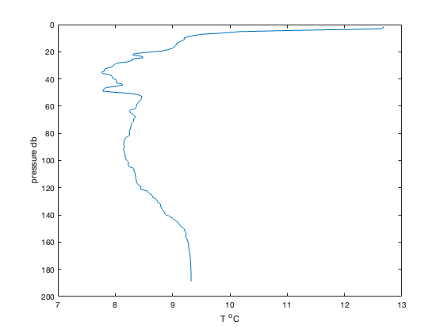
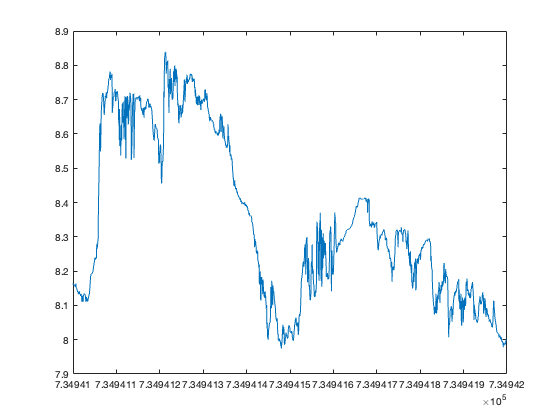
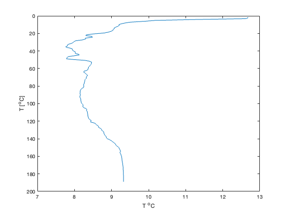
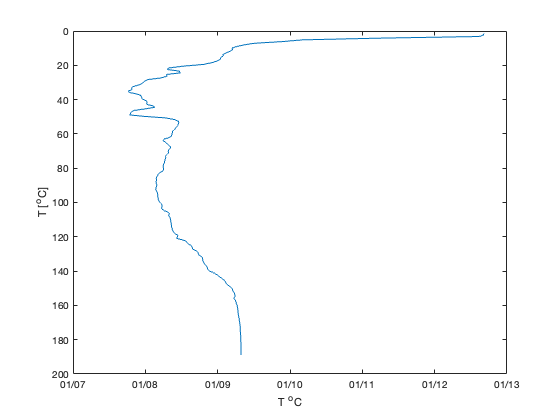
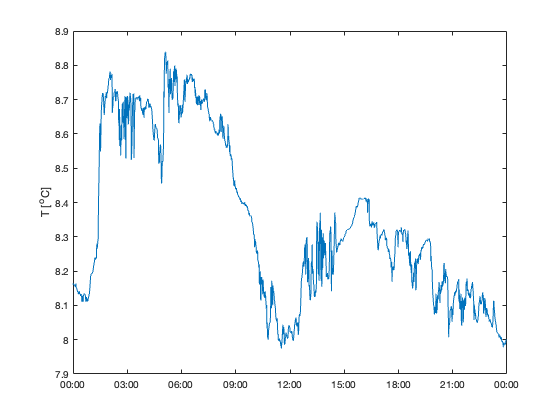
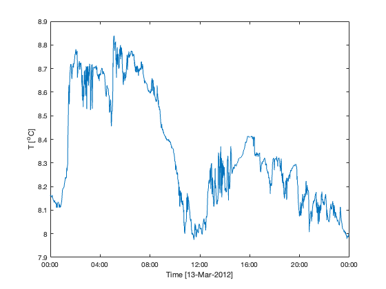

Lab 2: Intro: MATLAB times and graphs
Contents
Objective:
The objective of this lab is to get you started using the MATLAB computer program and to help you understand how MATLAB processes time data. We'll take a look at functions that output more than one value, and try making both vertical plots and timeseries plots.
Source:
You should be able to open and edit the file that made this html document. From within MATLAB, open Lab2.m (Do not just double-click the file from an Explorer window).
Commands we will use:
load, end, max, mean, now, datestr, datenum, plot, ylabel, datetick, xlabel, subplot, save, print
1: Using MATLAB to investigate data
In this section we practice the skills you learned in the tutorial in Lab 1 and learn how to:
a) Load and save data
b) manipulate the data
c) plot data
d) save our steps in as a script or m-file so they can be reproduced.
We'll start by using a temperature vs depth data set from a station in Saanich Inlet, S4, during a cruise in May 2008.
% To load the data into MATLAB, enter at the command prompt: clear load S4May2008.mat
Note that you will have to be in the directory MATLAB/Lab2 in order for this to be loaded. Otherwise MATLAB won't know where to find it. You change the directory using cd command, or you can use the GUI in the upper right corner.
Lets see what is in here by typing
whos
Name Size Bytes Class Attributes actualP 202x1 1616 double actualT 202x1 1616 double
or, you can look in the Workspace window.
now, lets inspect what is in these variables. In the Workspace window you can double-click on the variable and the Array Editor will open, showing what is in the array. Or, you could type
actualP(1:5) actualT(1:5)
ans =
1.5179
2.3677
3.2144
4.1705
5.1588
ans =
12.6781
12.6762
12.6122
11.2340
10.1731
MATLAB has built in functions that allow us to find out about the data.
What is the minimum Temperature value recorded during the May 2008 data set? At what depth did it occur? Use help min to see how to use the min function.
min(actualT) % this returns the minimum value of the array T and stores it as _ans_
ans =
7.7657
Tmin = min(actualT) % this stores the min value of T as a new variable, named Tmin
Tmin =
7.7657
Note in the help listing that we can use the format: [Tmin, i]=min(T)
This statement will return two pieces of information: the maximum temperature and the place in the array that it happened, that is, the index value. Try it -
[Tmin, i] = min(actualT)
Tmin =
7.7657
i =
36
What is the value of i? What depth (pressure) is at index i?
i actualP(i)
i =
36
ans =
34.9646
Let's make a graph of temperature vs pressure (depth) like you did at the end of last lab: note - we want to put pressure on the y-axis so we can have depth increasing downwards
plot(actualT, actualP) axis ij %I'm going to throw this in here now... what does it do?? xlabel('T ^oC') ylabel('pressure db')
2. Timeseries Data
Now let's switch from a vertical plot of T vs depth, to a timeseries plot! We will use a one-day dataset of temperature at ~96 m depth vs time from Saanich Inlet from March 13, 2012.
To load the data into MATLAB, enter at the command prompt:
clear;
load Mar13_T.mat
Note that you will have to be in the directory MATLAB/Lab2 in order for this to be loaded. Otherwise MATLAB won't know where to find it. You change the directory using cd command, or you can use the GUI in the upper right corner.
Lets see what is in here by typing
whos
Name Size Bytes Class Attributes T 1440x1 11520 double time 1440x1 11520 double
or, you can look in the Workspace window.
now, lets inspect what is in these variables. In the Workspace window you can double-click on the variable and the Array Editor will open, showing what is in the array. Or, you could type
T(1:5) time(1:5)
ans =
8.1646
8.1602
8.1624
8.1619
8.1592
ans =
1.0e+05 *
7.3494
7.3494
7.3494
7.3494
7.3494
What do these two commands show? They show the first 5 elements of the array named T and the array named time. How many elements are in these two arrays? How would you find the last five elements of the arrays? (hint - try the function end )
MATLAB has built in functions that allow us to find out about the data.
What is the minimum Temperature value recorded during the Mar 2012 data set? At what time of day did it occur? Use help min to see how to use the max function.
min(T) % this returns the minimum value of the array T and stores it as _ans_
ans =
7.9745
Tmin = min(T) % this stores the min value of T as a new variable, named Tmin
Tmin =
7.9745
Note in the help listing that we can use the format: [Tmin, i]=min(T)
This statement will return two pieces of information: the minimum temperature and the place in the array that it happened, that is, the index value. Try it -
[Tmin, i] = min(T)
Tmin =
7.9745
i =
692
What is the value of i? What time is at index i?
i time(i)
i = 692 ans = 7.3494e+05
Believe it or not, this number is a time. It's just in MATLAB format.
3. Tutorial: Dealing with MATLAB times
We will be dealing with timeseries a lot during this course, so understanding how to work with times is important. The entries in time are somewhat hard to understand:
time(1:3)
ans =
1.0e+05 *
7.3494
7.3494
7.3494
MATLAB stores times as days since Dec 31 -0001 AD. So.... 1 is equal to Jan 1, 0000. What that means is that today is
now
ans = 7.3950e+05
which is an unwieldly way of looking at things. MATLAB supplies a suite of functions for looking at times:
datestr(now)
ans =
'04-Sep-2024 14:22:25'
is one of the most convenient. There are options to datestr() that you can peruse using help datestr. Note: a string is a set of characters, i.e., a word!
datestr(now,1) datestr(now,27) datestr(now,'HH:MM dd mmm yyyy') datestr(now,'ddd')
ans =
'04-Sep-2024'
ans =
'Q3-2024'
ans =
'14:22 04 Sep 2024'
ans =
'Wed'
One way to deal with the funny MATLAB format is to subtract off a known date. Here we subtract off Jan 1, 2012 (we'll use 2012, since we know that this dataset comes from 2012):
time(1:3)-datenum(2012,1,1) % Note: the function |datenum| allows us to MAKE a date-number from a string of words.
ans = 72.0003 72.0010 72.0017
Note: instead of blindly doing what the text tells you to do... think about what you are asking the computer to do. In this case, what is it we are doing? Write it out in WORDS to help you understand.
And we see that the data we have collected is 72 days into 2012. The decimals represent portions of day.
The function datenum() returns a matlab-formated date using either strings or numbers of the month. If today is Sept 21, 2016 at 9:10:23 am
datenum(2018,9,26) datenum('26-Sept-2018') datenum(2018,9,26,9,10,23) datenum('26-Sept-2018 09:10:23')
ans =
737329
ans =
737329
ans =
7.3733e+05
ans =
7.3733e+05
If we want to figure out how much time there is between samples, we can use the diff and median functions:
dtMed = median(diff(time))
dtMed = 6.9446e-04
Remember - you can look at help diff and help median to see how these functions work. We've created a new variable called dtMed (that is, 'delta time, median'... or change in time, median), but we could call it anything we like.
This is some fraction of a day. To put into seconds we multiply by the number of hours in a day, and the number of seconds in an hour
dtMed*24*3600
ans = 60.0010
and see that the data have a little over 1-minute between samples.
Now that you've seen some ways to look at time... let's revisit the question above. At what time (in this dataset) was the minimum temperature recorded? (hint... try using datestr)
3. Plotting some timeseries data
My favourite way of exploring data is to graph it. I highly recommend working through MATLAB documentaion at http://www.mathworks.com/help/matlab/graphics.html. Use the plot command to plot the data in the vector T versus time. You can always use the help function to see how to use a particular command.
figure(1);clf plot(time, T)
Add an axis label to the y-axis using the ylabel() command:
ylabel('T [^oC]') %note the formatting commands in this label!
How do we get a meaningful time on the x-axis? We can use various tick-annotation functions. datetick() comes with MatLab
datetick
note how it changes the limits of the plot. If you don't like that:
figure(2);clf plot(time,T); datetick('keeplimits'); ylabel('T [^oC]')
You can also specify the xticks (this command is a quite tricky... spend some time looking at it to figure out how it works!)
figure(2);clf plot(time,T); set(gca,'xtick',[floor(time(1)):4/24:ceil(time(end))]) datetick('keepticks','keeplimits'); ylabel('T [^oC]') xlabel('Time');

We can use MATLAB to figure out what the date is for our data set... see if you can figure out what the statements below do -
str=['Time [' datestr(time(1),1) ']'] xlabel(str) %
str =
'Time [13-Mar-2012]'
 Remember to use the help plot command and the plot documentation to learn about different things you can do with plot. We've just made the default plot, which uses a blue line for the data. But you could use symbols, or dashed lines, or maybe change the colour of the line...
Scroll to the bottom of any help file and you will see some examples. I just about always start there when I'm trying to figure out how to use a function.
4. Saving your work
There are a number of ways to save your work in MATLAB. So far, you have been saving your script (i.e. the series of commands you have typed into the editor window). You've probably been clicking on the floppy disk icon in the top left corner of the editor window. You could also type a Ctrl-S at any time to do the same thing.
But what if you do a lot of processing work on a data set, getting it into the format you want for later use? Or maybe you want to share the results of your analysis? You don't need to give your partner your code and all the messy work you did to get to the final result. You just want to save the final result to hand on. In fact, you can make a .mat file, like Mar13_T.mat, that you could share.
You will do this using the save command. If you just use the command save, MATLAB will create a new .mat file called matlab.mat that contains everything in the Workspace, that is, every variable / matrix / vector etc that is currently in memory. Try experimenting with this function, and use the help save command and documentation to figure out how to make save do exactly what you want.
And what about figures? You can use the floppy disk icon or you can explicitly hard-code the saving of figures into your program using the print command.
There are a couple ways to save the figures you generate, so that you don't have to keep running the code to make the figures. One is by using the print() command. This will save the figure as an image file in the current directory.
Type help print for other printing options.
print -djpeg95 -r200 Lab2Fig2.jpg
Another option is to use the 'save' icon in the top left of the figure window. Use the drop-down menu to choose the image format (I like to use .jpg). Now you have an image file that can be inserted into documents such as Word files or Powerpoint presentations.
Take a few minutes to examine the menu options in the figure window. Sometimes it is easier to make alterations to your plot in this environment than to try to code everything explicitly. However, if you make many plots, you will have to do this by hand each time.
5. Formatting display and graphics
% format % format short 3.1416 % format short e 3.1416e+00 % format long 3.14159265358979 % format long e 3.141592653589793e+00 % format compact suppresses extra line feeds % xlabel('string'), ylabel('string') label the horizontal and vertical axes, respectively, in the current plot; % title('string') add a title to the current plot; % axis([XMIN XMAX YMIN YMAX]) change axis limits on the current graph ; % grid adds a rectangular grid to the current plot; % hold on freezes the current plot so that subsequent graphs will be displayed with the current; % hold off releases the current plot; the next plot will erase the current before displaying; % subplot puts multiple plots in one graphics window. % %
ASSIGNMENT
Part I: Writing your own script (m-file)
For this section, you will write your own script to remove the mean from the March 13, 2012 Temperature data and re-plot it.
- Make a new m-file called Lab2CodeYourlastname.m. This script will contain all the code needed to: Load the March 13, 2012 datafile. Calculate the mean of T (using the mean function) and subtract it from T, making a new variable. Now that you've done some work on your dataset, save your new variable (T with the mean removed) and time (and ONLY those two variables) into a new mat file called george.mat. Now plot the new variable versus time, using a red dashed line. Label your axes. Include a descriptive (but concise!) title for your figure. And then add a line to your code that will save your figure with the name LastnameFig2.jpg
As a comment below your code, include your answer to Q1 below.
Q1. The value obtained by subtracting the mean of a data set from the data is called the temperature anomaly. Why do you think oceanographers calculate temperature anomalies? Describe a situation where this might be useful.
NOTE:
You will be marked on 1) your answers to the questions; 2) your ability to follow directions; and 3) the elegance of your code. Keep things neat and organized. Use % to make comment lines to explain what you are doing. Use the semicolon ; after commands to supress unnecessary output. Make sure you follow the file name conventions I've asked for.
You need to hand in 1 file:
- Lab2CodeYourlastname.m with your code and answer to Q1
Upload your assignment to the Brightspace Dropbox.
. . .
Last compiled on:
datestr(now)
ans =
'04-Sep-2024 14:22:30'